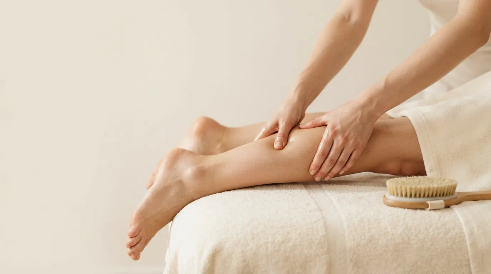

Массаж тела · Прага 4
Антицеллюлитный массаж в Праге
Интенсивная работа с проблемными зонами. Массаж улучшает кровообращение, стимулирует расщепление жира и повышает упругость кожи.
Что такое антицеллюлитный массаж
Антицеллюлитный массаж - это интенсивный ручной массаж зон, где целлюлит появляется чаще всего: бёдер, ягодиц, боков и живота. Глубокие разминающие и растирающие движения ускоряют движение крови и лимфы там, где кровообращение замедлено.
После массажа кожа наполняется кровью и становится плотнее, уходит лишняя жидкость. Целлюлит не исчезает после одной процедуры - заметный результат даёт курс массажа вместе с движением и питьевым режимом.
Как проходит процедура
- Короткая консультация Обсуждаем, какие зоны вас беспокоят и насколько интенсивный массаж вам комфортен.
- Разогрев Вводными движениями с маслом прогреваю ткани и готовлю их к глубокой работе.
- Интенсивный массаж Разминанием и растиранием прорабатываю бёдра, ягодицы и другие проблемные зоны.
- Лимфодренажные движения Завершающие движения по направлению к лимфоузлам помогают оттоку жидкости.
Эффект антицеллюлитного массажа
- улучшение кровообращения в проблемных зонах
- более упругая и гладкая кожа
- стимуляция расщепления жира
- отток лишней жидкости и меньше отёков
- лёгкость в ногах
- постепенное уменьшение проявлений целлюлита при курсе
Кому подходит
Антицеллюлитный массаж подойдёт всем, кого беспокоят целлюлит, дряблая кожа или тяжесть в ногах. Лучше всего он работает курсом и в сочетании с движением, например вместе с вакуумным массажем тела.
Когда массаж не проводится
- варикоз, флебит или тромбоз
- кожные заболевания, повреждения или воспаления в зоне массажа
- высокая температура и острые заболевания
- беременность и кормление грудью
- склонность к синякам или приём препаратов, разжижающих кровь
Сомневаетесь? Позвоните мне до записи по номеру +420 721 761 411, и мы всё обсудим.
Цена антицеллюлитного массажа
Частые вопросы
Сколько процедур нужно?
Для заметного результата рекомендую курс из 8-10 процедур один-два раза в неделю. План составим с учётом вашей кожи.
Больно ли это?
Массаж интенсивный, и в чувствительных местах вы можете ощущать давление. Но силу я всегда подбираю так, чтобы было терпимо.
Могут ли появиться синяки?
На чувствительной коже возможны небольшие синячки, особенно в начале курса. С каждой следующей процедурой они обычно исчезают.
Уберёт ли массаж целлюлит навсегда?
Нет. Массаж улучшает кровообращение и вид кожи, но результат нужно поддерживать движением, питьевым режимом и периодическим массажем.
Запишитесь на антицеллюлитный массаж
Студия находится в Праге 4 - Нусле, недалеко от Панкраца и Вышеграда. Запись онлайн займёт минуту.
Другие массажи тела
Как нас найти
Děkanská vinice I 819/16, 140 00 Praha 4 - Nusle
Часы работы: Вт, Чт, Пт 9:00-20:00 · Сб 10:00-17:00